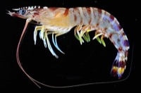

車えびの漁獲量 都道府県ランキング
全15都道府県の順位と漁獲量
最終更新：
車えびの漁獲量が全国で最も多いのは愛知県で、67 tです。全国（165 t）の41%を占めます。

| 順位 | 都道府県 | 漁獲量 | 全国に占める割合 |
|---|---|---|---|
| 1位 | 愛知県 | 67 t | 41% |
| 2位 | 愛媛県 | 20 t | 12% |
| 3位 | 長崎県 | 16 t | 9.7% |
| 4位 | 福岡県 | 15 t | 9.1% |
| 5位 | 大分県 | 15 t | 9.1% |
| 6位 | 兵庫県 | 8 t | 4.8% |
| 7位 | 熊本県 | 7 t | 4.2% |
| 8位 | 山口県 | 5 t | 3.0% |
| 9位 | 徳島県 | 3 t | 1.8% |
| 10位 | 香川県 | 3 t | 1.8% |
| 11位 | 三重県 | 2 t | 1.2% |
| 12位 | 宮城県 | 1 t | 0.6% |
| 13位 | 千葉県 | 1 t | 0.6% |
| 14位 | 静岡県 | 1 t | 0.6% |
| 15位 | 岡山県 | 1 t | 0.6% |
PR

車えびの漁獲量の推移（令和2年〜令和6年）
全国の漁獲量は、令和2年の245 tから令和6年の165 tへ、33%減りました。期間中、1位は一貫して愛知県です。
| 年 | 全国 | 1位 | 2位 | 3位 |
|---|---|---|---|---|
| 令和6年 | 165 t | 愛知県67 t | 愛媛県20 t | 長崎県16 t |
| 令和5年 | 202 t | 愛知県72 t | 愛媛県28 t | 長崎県22 t |
| 令和4年 | 214 t | 愛知県75 t | 愛媛県33 t | 大分県21 t |
| 令和3年 | 213 t | 愛知県67 t | 愛媛県52 t | 福岡県17 t |
| 令和2年 | 245 t | 愛知県75 t | 愛媛県56 t | 福岡県32 t |
この数字について
- 分類：海老の仲間
- 全国の漁獲量：165 t
- この数字が表すもの：漁獲量（海面漁業の漁獲量。養殖は含みません）
- 調査：海面漁業生産統計調査（海面漁業） 令和6年
- 15県分を調査（調査していない県は順位に入りません）
このページを引用するとき
出典：都道府県別 生産量ランキング「車えびの漁獲量 都道府県ランキング」https://seisanryo.com/item/kurumaebi（元データ：海面漁業生産統計調査（海面漁業） 令和6年）
リンク・引用は連絡なしで自由に行えます。詳しくは引用・リンクについてをご覧ください。
車えびの漁獲量について、よくある質問
- 車えびの漁獲量が日本一の都道府県はどこですか？
- 愛知県です。海面漁業生産統計調査（海面漁業）（令和6年）で67 tでした。
- 車えびの漁獲量ランキング2位・3位はどこですか？
- 2位は愛媛県（20 t）、3位は長崎県（16 t）です。
- 車えびの漁獲量ランキング4位・5位はどこですか？
- 4位は福岡県（15 t）、5位は大分県（15 t）です。車えびの全15県の順位は上の表のとおりです。
- 車えびの全国の漁獲量はどれくらいですか？
- 165 t（令和6年）です。
広告